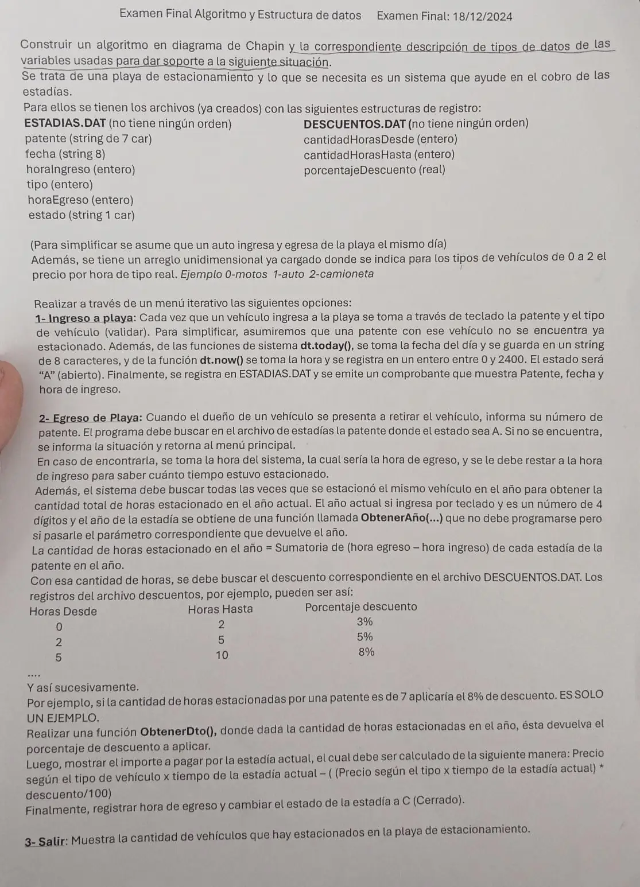

Final, 18/12/2024 (Playa de estacionamiento)
3° parcial y final, 18/12/2024
Enunciado


Propuesta de respuesta
Respuesta no verificada. La propuso Luta Studios con inteligencia artificial y ningún docente la revisó. Puede tener errores.
La hoja pide el diagrama de Chapin. Va un diagrama por módulo, con su declaración de variables arriba, y primero el del programa principal. Si un diagrama no entra en la pantalla, tocalo para verlo completo. Después de los diagramas está el mismo algoritmo en Python, para que lo puedas probar. Las sentencias de archivos van con las palabras reservadas de Python (open, pickle.load, pickle.dump, seek, tell). Los textos se completan con ljust para que los registros midan lo mismo. El tamaño de un registro sale de tell() después de leer el primero.
Menú iterativo
Hora del sistema
1- Ingreso a playa
2- Egreso de playa
3- Salir
El mismo algoritmo en Python
Es el programa que se probó, con las mismas sentencias y en el mismo orden que las cajas. Cada Leer del diagrama es un input, convertido a int o float según la declaración, y cada Mostrar es un print.
import os
import pickle
from datetime import datetime as dt
class Estadia:
def __init__(self):
self.patente = ""
self.fecha = ""
self.horaIngreso = 0
self.tipo = 0
self.horaEgreso = 0
self.estado = ""
class Descuento:
def __init__(self):
self.cantidadHorasDesde = 0
self.cantidadHorasHasta = 0
self.porcentajeDescuento = 0.0
# precio: arreglo [0..2] de float (ya cargado: 0 motos, 1 auto, 2 camioneta)
precio = [0.0]*3
# afEstadias, afDescuentos: str
# alEstadias, alDescuentos: archivo
afEstadias = "ESTADIAS.DAT"
afDescuentos = "DESCUENTOS.DAT"
alEstadias = open(afEstadias, "r+b")
alDescuentos = open(afDescuentos, "rb")
def HORA_ACTUAL():
# ahora: datetime
ahora = dt.now()
return ahora.hour * 100 + ahora.minute
def HORAS(desde, hasta):
# desde, hasta: int (hora en formato hhmm)
return (hasta // 100 + hasta % 100 / 60) - (desde // 100 + desde % 100 / 60)
def INGRESO():
# reg: Estadia
reg = Estadia()
reg.patente = input("Patente: ").ljust(7, " ")
reg.tipo = int(input("Tipo (0 moto, 1 auto, 2 camioneta): "))
while reg.tipo < 0 or reg.tipo > 2:
reg.tipo = int(input("Tipo inválido: "))
reg.fecha = dt.today().strftime("%d/%m/%y")
reg.horaIngreso = HORA_ACTUAL()
reg.horaEgreso = reg.horaIngreso # todavía no egresó
reg.estado = "A"
alEstadias.seek(0, 2)
pickle.dump(reg, alEstadias)
alEstadias.flush()
print("Comprobante:", reg.patente, reg.fecha, reg.horaIngreso)
def BUSCA_ABIERTA(pat):
# Secuencial: ESTADIAS.DAT no tiene orden
# pat: str
# tam, pos, p: int
# reg: Estadia
tam = os.path.getsize(afEstadias)
pos = -1
alEstadias.seek(0, 0)
while alEstadias.tell() < tam and pos == -1:
p = alEstadias.tell()
reg = pickle.load(alEstadias)
if reg.patente == pat and reg.estado == "A":
pos = p
return pos
def HORAS_EN_EL_AÑO(pat, año):
# pat: str
# año, tam: int
# total: float
# reg: Estadia
tam = os.path.getsize(afEstadias)
total = 0
alEstadias.seek(0, 0)
while alEstadias.tell() < tam:
reg = pickle.load(alEstadias)
if reg.patente == pat and reg.estado == "C" and ObtenerAño(reg.fecha) == año:
total = total + HORAS(reg.horaIngreso, reg.horaEgreso)
return total
def ObtenerDto(horas):
# horas, dto: float
# tam: int
# reg: Descuento
tam = os.path.getsize(afDescuentos)
dto = 0
alDescuentos.seek(0, 0)
while alDescuentos.tell() < tam:
reg = pickle.load(alDescuentos)
if horas >= reg.cantidadHorasDesde and horas < reg.cantidadHorasHasta:
dto = reg.porcentajeDescuento
return dto
def EGRESO():
# pat: str
# pos, año: int
# tiempo, anual, dto, bruto: float
# reg: Estadia
pat = input("Patente: ").ljust(7, " ")
pos = BUSCA_ABIERTA(pat)
if pos == -1:
print("No hay un vehículo estacionado con esa patente")
else:
alEstadias.seek(pos, 0)
reg = pickle.load(alEstadias)
reg.horaEgreso = HORA_ACTUAL()
tiempo = HORAS(reg.horaIngreso, reg.horaEgreso)
año = int(input("Año actual: "))
while año < 1000 or año > 9999:
año = int(input("Tiene que tener 4 dígitos: "))
anual = HORAS_EN_EL_AÑO(pat, año)
if ObtenerAño(reg.fecha) == año:
anual = anual + tiempo
dto = ObtenerDto(anual)
bruto = precio[reg.tipo] * tiempo
print("Horas en el año:", anual, "- descuento:", dto, "%")
print("Importe a pagar:", bruto - bruto * dto / 100)
reg.estado = "C"
alEstadias.seek(pos, 0)
pickle.dump(reg, alEstadias)
alEstadias.flush()
def ESTACIONADOS():
# tam, cant: int
# reg: Estadia
tam = os.path.getsize(afEstadias)
cant = 0
alEstadias.seek(0, 0)
while alEstadias.tell() < tam:
reg = pickle.load(alEstadias)
if reg.estado == "A":
cant = cant + 1
print("Vehículos estacionados:", cant)
# Programa principal
# opcion: int
opcion = 0
while opcion != 3:
print("1- Ingreso a playa")
print("2- Egreso de playa")
print("3- Salir")
opcion = int(input("Opción: "))
while opcion < 1 or opcion > 3:
opcion = int(input("Opción inválida: "))
match opcion:
case 1:
INGRESO()
case 2:
EGRESO()
ESTACIONADOS()
alEstadias.close()
alDescuentos.close()Respuesta no verificada. Puede tener errores.
Se armó con la hoja del examen y la página del 3° parcial y final (registros como clase, recorrer, búsquedas, actualizar un registro y alta). Las operaciones de archivos siguen las diapositivas de merge y corte de control. El Chapin sigue la forma de las diapositivas del examen de Historia Clínica de 2019. La fecha y la hora salen de dt.today() y dt.now(), como dice la hoja.
Quedó en duda: La hora se guarda como hhmm (por ejemplo 1430). Para restar se pasa a horas con decimales, porque 1430 - 1345 no da el tiempo real. La hoja dice que se restan directo. Un descuento vale desde sus horas desde y hasta antes de sus horas hasta, para que 2 horas no caigan en dos filas. Las horas del año suman las estadías cerradas de ese año más la actual. ObtenerAño recibe la fecha y no se programa. La hora de egreso se inicia igual a la de ingreso hasta que el vehículo sale. En Python, pickle graba un entero menor que 256 en menos bytes que uno más grande. Por eso una estadía que entra antes de las 0256 (hora menor que 256) y sale después agranda su registro al cerrarla. Entonces el registro deja de coincidir con la posición que calcula el programa. El material pide registros del mismo tamaño y solo muestra cómo lograrlo con textos (ljust). Las pruebas se hicieron con datos que no cambian el tamaño. El año actual se pide en el egreso y se valida con 4 dígitos, como dice la hoja. Las diapositivas de la materia no muestran en Chapin la lectura de datos ni la selección múltiple. Acá van como Leer y como Según, con una columna por caso.
¿Cómo te fue?
Marcá cada tema del examen.
- ArchivosSecuencial y de acceso directo, en 3° parcial y final
- FuncionesFunciones que el enunciado pide invocar, en 2° parcial
- BúsquedaBúsqueda secuencial, en 2° parcial